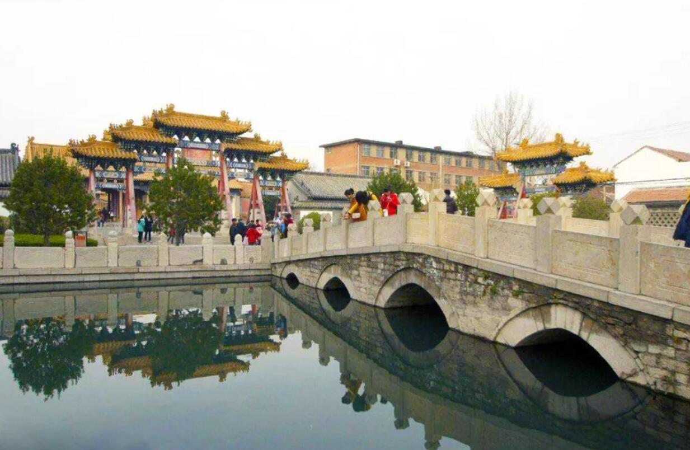

芙蓉街简介
芙蓉街位于山东省济南市历下区，是一条南北走向的街道，北起西花墙子街南口，南与泉城路相连，全长432米，宽4.6米，是济南市的历史文化街区，是济南老城重要的标志性街区之一。
芙蓉街因街上有芙蓉泉而得名，明万历二十八年（1600年），以芙蓉泉为水源凿小河引至府学门前外泮池，名“梯云溪”，沿溪的街道就是芙蓉街。芙蓉街上有文庙、马市街等景点。
在济南的老街中，芙蓉街可能是最热闹的。无数的小商小贩，在路两边各据一摊或一店，各色小吃琳琅满目。芙蓉街上每天人流不断。相比于大多数寂寂无声的老街，这芙蓉老街充满了商业活力。
据说从前，这里曾是济南府最繁华之地，商贾聚居，多有豪门大院。繁华如过眼烟云。现在的芙蓉街，以小吃闻名。对于大多数人来说，来芙蓉街是冲着它的小吃来的。许多逛街购物的人饿了累了都会来这里吃饭，几元钱就可以混个饱肚。脚下是青石板的路面，眼中是路边一个个的小吃店，鼻中是各色小吃的香味，耳中是各路小贩的吆喝。傍着繁华的泉城路，芙蓉街，依然热闹，但这热闹是轻松的，是市井的，是锅碗瓢勺叮叮当当的热闹。
历史沿革
芙蓉街，这名字得自街中路西的芙蓉泉。芙蓉泉藏身在民宅之中，自然天成。老残游记里说的“家家泉水，户户垂杨”，一直被视为济南的写照。因此，可以说芙蓉街体现了济南的泉水文化的特色。
人们住在这儿有多美？有诗为证：“老屋苍苔半亩居，石梁浮动上游鱼。一池新绿芙蓉水，矮几花阴坐著书。”这是清代一诗人董芸写的《芙蓉泉寓居》。
明万历二十八年（1600年），以芙蓉泉为水源凿小河引至府学门前外泮池，名“梯云溪”。沿溪的街道就是芙蓉街。那时的住户大多住在街的西侧，家家户户邻溪水，一派江南风光。
清顺治年间，人们在“梯云溪”上架起一座桥，取名“青云桥”，取平步青云之意，桥首建一牌坊，坊额上题有“腾蛟起凤”四个大字。康熙初年，芙蓉东侧也逐渐建起了民房和店铺，自此街上商贾云集，游人如织，遂将街中的“梯云溪”改成青石板路面下的暗沟。在芙蓉街周围有抚院、都司、布政司、贡院、府学等衙门机构，因此许多商家在此开业，芙蓉街成为繁华的街道。
清同治元年（1862年），章丘孟家在街上开设“瑞祥”布店。清同治十一年（1872年），济南第一家眼镜店“一珊号”在街上开业。1913年，鞠思敏等人在街上创办济南教育书社。清光绪年间，济南最大的百货店“文升祥”在街上开业。街上还有“宏升斋”等鞋帽铺，“恒祥兴”等绸布庄，“聚蚨祥”等染坊，“宝善斋”等钟表店，“容芳馆”等照像馆，“民华堂”等理发所，专卖养蜂用具、花卉种子及农药的 “迦南商行”，印刷局。中药、西药、笔铺、京货店、首饰店、书籍、字画、文具、南纸、乐器、服装、陶器、古董、刻字、楠木、铜锡器、小吃店、钱行等。
1956年后实行转并，多数店铺转为厂房和住宅。改革开放后，逐渐又变成小吃一条街。政府对芙蓉街的开发建设非常重视，曾邀请清华大学城市研究所来济做过芙蓉街复原及建设规划，著名的规划建设大师吴良镛教授和张杰博士也对芙蓉街复原改建提出了很好的建议。方运承先生提出了具体规划，芙蓉街展宽8公尺左右，新开“芙蓉河”宽10公尺，河两边为6公尺的顺河街，沿滨2公尺宽的斜坡绿带或涉水石阶，绿带内种植垂柳、花卉、草皮、安置石凳，建茶坊、酒楼和小吃店，沿河建骑楼式茶室，交通路口处建拱桥，到时将是“楼向柳边起，船在画中游。”政府现拟将芙蓉街改建成“民俗街”在不久的将来芙蓉街这条富有浓厚文化底蕴的老街，定会焕发出勃勃生机。
主要景点
芙蓉街的建筑反映了清末民初的发展变化，中西合璧至今仍存。芙蓉也即荷花，是济南人最喜爱的花，因而，芙蓉街的四泉一街一巷均以“芙蓉”为名，其所承载的悠久而灿烂的文化，成为济南作为历史文化名城的标志性街巷之一。
芙蓉街正位于泉城济南的中心。芙蓉街因街上有芙蓉泉而得名，如果说"四面荷花三面柳、一城山色半城湖"是泉城济南的绝妙写照的话，那么"家家泉水、户户垂杨"就是芙蓉街及其周围地区的真实描述。芙蓉泉在济南七十二泉中名列第四十二，是名泉中极具特色的一眼：她既没有趵突泉的豪放也没有珍珠泉的婉约，她身藏于民宅之中给人一种“藏在深闺人未识”的感觉，但是这一切都逃不出诗人的慧眼，清代著名诗人董芸在其成名之作《广齐音》的压卷篇《芙蓉泉寓居》中这样写到：“老屋苍台半亩居，石梁浮动上游鱼。一池新绿芙蓉水，矮几花阴坐著书”。
芙蓉泉，它，还在吗？我们向路边闲坐的老人询问，得到了肯定的回答。
芙蓉泉位于济南芙蓉街西侧，金《名泉碑》、明《七十二泉诗》、清《七十二泉记》均有著录，今名列济南新七十二名泉。泉出露形态为渗流。泉池呈长方池，东西长10米，南北宽5.3米，深1.5米。以石砌岸，中架石桥，东、南、西三面接房屋外壁，北面装雕石栏杆。墙壁上嵌有书法家魏启后先生书写的泉名。
溪上架桥，建有牌坊，额题“腾蛟起凤”，寓其前程腾达。清康熙初年，景色渐衰，梯云溪改为暗沟，上铺青石，桥坊皆毁，仅存芙蓉泉池。芙蓉泉曾列金、明、清三代七十二名泉。《老残游记》中描写济南“家家泉水，户户垂杨”，而现今位列七十二泉的泉水中，真正涌泉于居民院落的泉水较有名的只有芙蓉泉。
到达线路
泉城路步行街中段路北即是芙蓉街南口。顺芙蓉街北行依次可见济南府学文庙，基督教教会，曲水亭，大明湖正门。
芙蓉泉
济南泉城路北，层楼叠榭，砖青瓦黛。古巷深处，一池碧绿藏身街角，称芙蓉泉。甃石为方池，中有石桥，碧绿青翠。清代郝植恭《七十二泉记》描述：“泉有以植物名者……曰芙蓉，明以艳也。”这芙蓉，就是济南市花荷花的别称。芙蓉泉不仅是一眼泉，还是济南内河“梯云溪”的源头。金秋时节，芙蓉泉泉水清澈，池鱼畅游，与老宅相伴，颇有老济南的韵味。许多市民纷纷来此赏名泉、逛老街，乐在其中。
梯云溪
梯云溪位于芙蓉街街心，是一条从芙蓉泉直通到府学文庙泮池的泉溪。 走在熙熙攘攘的芙蓉街上，难以想象，脚底下竟有着一条汩汩流淌的泉溪。想必“家家泉水,户户垂杨”的情景便是这泉溪中涌出来的泉水所致吧。顺治初年，梯云溪上修建起了一座石桥，名为“青云桥”，并修建了“腾蛟起凤”的牌坊。梯云溪、青云桥、腾蛟起凤牌坊这些寄予着美好寓意的名字都跟附近的府学文庙和贡院有关。 
芙蓉街古韵
走进现实中芙蓉街就好像走进了一座年久失修的历史博物馆，尽管随着历史的变迁，陈迹渐少，但从沿街二层小楼的精美木刻仍可推想出当年老街的繁荣。虽然她与仅一街之隔高楼通衢、车水马龙的泉城路相比显得黯然失色，但芙蓉街却因此成了表现老济南最好的外景地。为了方便车辆的通行，压实的柏油路取代了年迈的石板路，漫步在芙蓉街上，虽然这里早已没有了过去的青石板路，再也听不到青石板下淙淙的水声，但经年累月世事沧桑的历史沉淀会使你一不小心就踩出一个故事来。你要把脚步放轻些、再放轻些……
芙蓉街巷
芙蓉街，一条济南性格的老街。它是繁华的，又是沧桑的，是热闹的，又是幽静的。就象济南这座城市，将古朴与现代融于一体。就象济南人，在匆匆忙忙的现代生活中，依然保持着温厚与淳朴。老街，有颓坏的民居，正声色不动地沧桑着。有推倒的旧屋，裸露着屋梁，正有泥瓦匠在那儿调水和泥，要建一座新的出来。有粉刷一新的招牌，在古旧的屋子上亮白耀眼。还有百年老字号玉谦旗袍店，似乎在见证着芙蓉街的悠久历史。
街巷烟火
在济南的老街中，芙蓉街可能是最热闹的。无数的小商小贩，在路两边各据一摊或一店，各色小吃琳琅满目。芙蓉街上每天人流不断。相比于大多数寂寂无声的老街，这芙蓉老街充满了商业活力。现在的芙蓉街，以小吃闻名。对于大多数人来说，来芙蓉街是冲着它的小吃来的。脚下是水泥的路面，眼中是路边一个个的小吃店，鼻中是各色小吃的香味，耳中是各路小贩的吆喝。傍着繁华的泉城路，芙蓉街，依然热闹，但这热闹是轻松的，是市井的，是锅碗瓢勺叮叮当当的热闹。